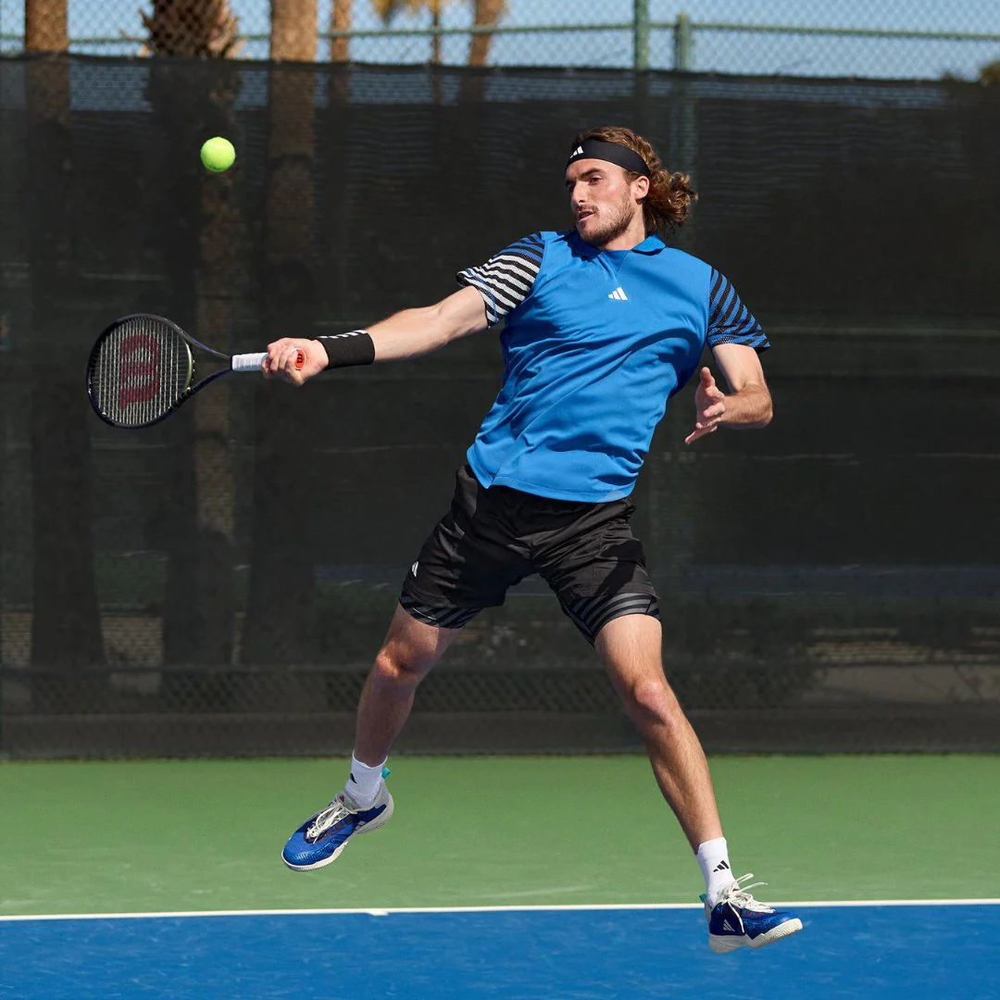
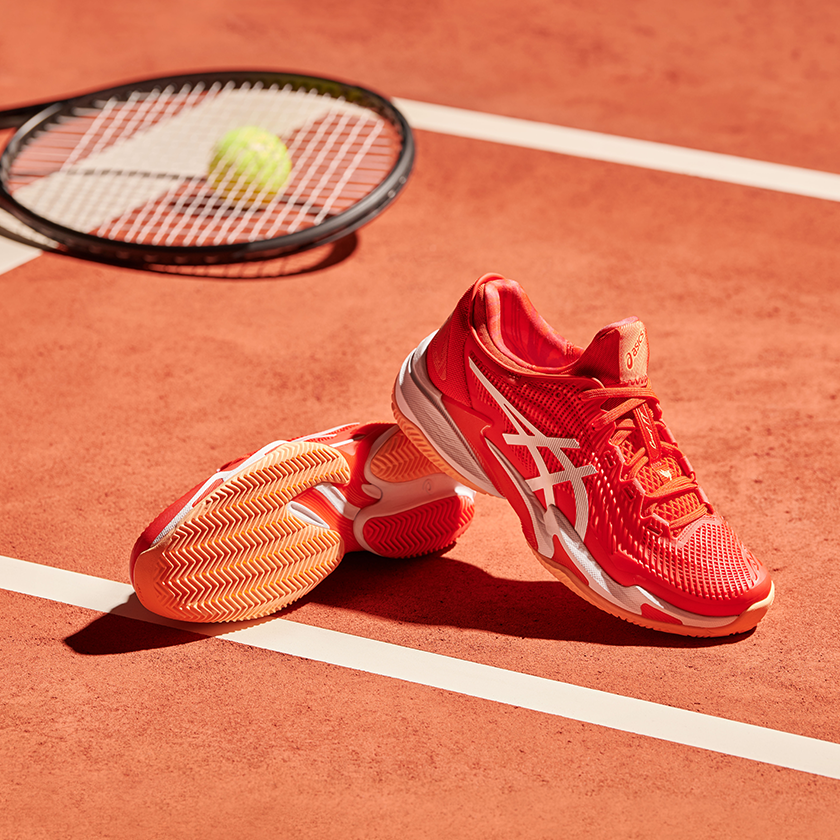

La camiseta indicada debe tener su tela de material sintético para que facilite el movimiento del cuerpo y que con su elasticidad, sea un aporte a tu flexibildad y agilidad. A su vez, debe permitirte tener una buena transpiración con la finalidad de disminuir el exceso de sudor. Usualmente la franela es de color blanco o tonos claros con el objetivo de reflejar el sol y aplacar tu calor corporal.
De igual manera, el pantalón debe estar confeccionado en tela de material sintético y elástico para brindar una buena movilidad a la hora de jugar y al mismo tiempo ser transpirable: la comodidad siempre te permitirá demostrar tus habilidades con soltura. Es recomendable que tengan bolsillos, pues así el jugador podrá usarlos para guardar las pelotas cuando se realice el saque. Las faldas o vestidos en las chicas cuentan con las mismas cualidades que las prendas mencionadas anteriormente.
Las zapatillas aptas para practicar este deporte deben ser flexibles para que se adapten a la rapidez del movimiento de los pies y a la manera en la que se desliza el jugador, de atrás para adelante y de lado a lado, por esto la suela incluye un refuerzo en cada uno de sus lados para permitir el equilibrio en movmimientos laterales. Es necesario que queden ajustados pero no en exceso. De igual manera, la suela del zapato debe ser resistente para adaptarse y adherirse al tipo de cancha donde se esté jugando. No es recomendable utilizar zapatillas de baloncesto o futbol, ya que los requerimientos del Tenis y el terreno de la cancha son distintos.
